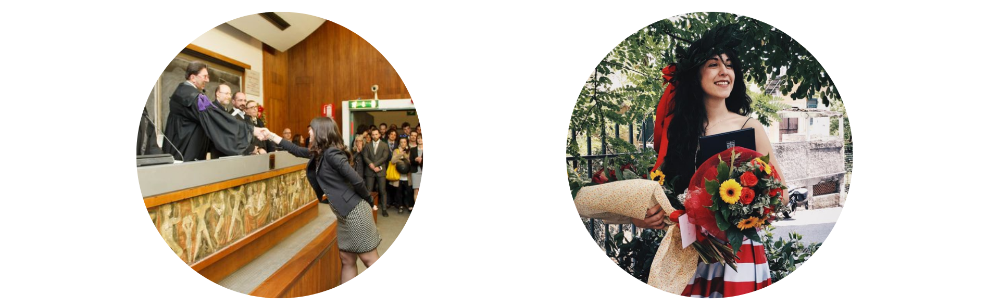

Giulia D'Angelo
I develop brain-inspired software and hardware for real-time robotic applications,
achieving microsecond-level latency and milliwatt power consumption.
Neuromorphic algorithms for active vision
Marie Skłodowska-Curie Postdoctoral Fellow
Czech Technical University in Prague
Hi. I'm Giulia, nice to meet you.
"The brain is imagination, and that was exciting to me; I wanted to build a chip that could imagine something"; Misha Mahowald.
I hold a Bachelor's Degree in Biomedical Engineering, followed by a Master's Degree in Neuroengineering with honors from the University of Genoa and a Master's Thesis in Computer Vision on neuromorphic visual algorithms at King's College London. This experience laid the foundation for my understanding of bioinspired intelligent systems.

After a year as a software engineer for computer vision at the Italian Institute of Technology, I completed my PhD at The University of Manchester, receiving the President's Doctoral Scholar Award, the highest accolade bestowed upon postgraduate members for academic excellence and leadership potential. During my doctoral studies, I specialized in bioinspired algorithms for visual attention, focusing on the humanoid robot iCub. Additionally, I gained expertise in event-driven sensing and expanded my knowledge of neuromorphic algorithms through hands-on work with platforms such as SpiNNaker, Speck, and Loihi.

I continued as a postdoctoral researcher at the Italian Institute of Technology, exploiting the solutions that evolution has taken advantage of to solve daily visual tasks and improve artificial systems design by emulating such solutions on innovative neuromorphic hardware. I have recently been awarded the Marie Skłodowska-Curie Postdoctoral Fellowship, which funds my research project at the Faculty of Electrical Engineering, Czech Technical University in Prague. The ENDEAVOR project, Event-driven Active Vision for Object Perception, focuses on leveraging end-to-end spiking-based architecture for online robotic applications, revolutionizing object recognition techniques.

My ongoing research revolves around neuromorphic algorithms and computing, with the objective of demonstrating their suitability for real-time robotics applications characterised by minimal power consumption and low latency. The visual attention model I proposed during my doctoral studies for the humanoid robot iCub, includes three channels of information: intensity, depth and motion showing great capabilities in terms of latency (~16ms response) and reduced computational loads. Its significance lies in laying the groundwork and establishing the necessary framework to ensure functional saccadic movements for active visual exploration of the scene.